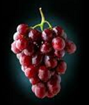
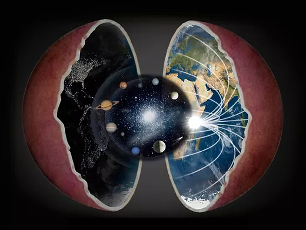
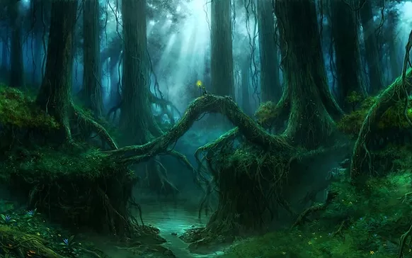
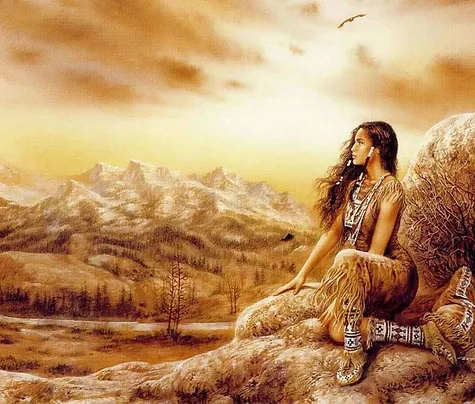

Все мы учили историю в школе. И родители учили, и бабушки и прадедушки, а сейчас и дети наши тоже учат историю. Только вот версии наспех сочинённой, самой себе противоречащей бредятины никак не стыкуются между поколениями. Ещё бы — каждый новый учебник переписывают с нуля. Кому и зачем это выгодно я не буду уточнять, благо, этой информацией переполнена сеть. Я предлагаю свой вариант, но только не изтории, а реальных событий, произошедших на нашей планете.
Я ни в коем случае не претендую на истинность описанных здесь суждений, а всего лишь делюсь своим вИдением картины Мiра.- кому-то он покажется бредом сумасшедшего
- кому-то сказкой на ночь;
- а на кого-то выльется ведром ледяной воды,
У нас украли век: сейчас 2121 год. Наша планета, несмотря на свой огромный размер — всего лишь маленькая виноградина в гигантской виноградной грозди, состоящая из нескольких каскадов и ягод разного диаметра.
Мы живём внутри планеты, и никакого жутко холодного космоса нет, а небо над головой — это всего лишь ядро, усыпанное звёздами. Планеты в небе — маленькие сферы, вращающиеся вокруг ядра. Луна и Солнце — искусственные светильники, размером с небольшой город.
Следует отметить, что Луна, Солнце, все планеты, звёзды и само ядро, к которому всё это прикручено — есть искусственно созданная скорлупа, которая закрывает собой центральное истинное светило нашей планеты, которое мы никогда не видели.
Эра кремния
Биосфера Земли была пропитана кремниевой формой жизни до тех пор, пока светило центральное Солнце.
Фильм "Аватар", кстати намекает на истинный облик нашей планеты.
То, что мы сейчас называем деревьями — это жалкие кусты, по сравнению с тем, какими были исполинские леса в прошлом.
Слово "Древность" — не значит "Старый", оно указывает на конкретный временной период, когда росли древа, уничтоженные сейчас на 100%.
Все живые существа представляли собой единый здоровый организм. Никаких войн, языков, границ, хищничества, одним словом — гармония, как и положено здоровой виноградине.
Эра углерода
Несколько тысяч лет назад, как заползает червяк во фрукт, в нашу виноградину заползли паразиты и постепенно её заразили. Была великая битва в небе, которую примерно описывают "Звёздные войны".
ахватчики первым делом запечатали центральное светило в скорлупу. Из-за этого планета обрела цикличность и все кремниевые тела оказались не способными жить в новом мире, поэтому попросту окаменели.
Абсолютно все камни нашей планеты — это трупы кремниевого мира. На этих камнях и появилась совершенно новая форма жизни — углеродная.
С помощью высокотехнологичной генной инженерии оккупантов планета была заселена с нуля. Это коснулось всех видов живых существ, кроме арийцев. Их так и не смогли победить, поэтому их кремниевые тела плавно заменили углеродными, путём внедрения вируса, который мутировал в ту анатомию тела, которую мы знаем сегодня.
Предположительно, это случилось 7524 лета назад, поэтому этот стиль принято называть "От Сотворения Мiра". Это действительно было сотворение абсолютно нового мира, на порядок примитивней прежнего. Люди, животные и растения постепенно размножились. На планете вновь зашумели исполинские леса, несмотря на то, что ни на минуту не прекращалось порабощение.
Эра биороботов
300 лет назад (ядерная зима 1816г) поверхность планеты выжгли энергетическими снарядами (многие путают их с ядерными, но это по причине неведания более мощного оружия). Были уничтожены почти все леса и люди. По подсчётам учёных сгорело 99,995% биосферы. Изменилось атмосферное давление и химический состав воздуха, поэтому сегодняшние леса не растут выше 30 метров, а люди подвержены многочисленным болезням.
Апокалипсис — приоткрытие занавеса
Эра биороботов подошла к своему логическому завершению. Нас с вами угораздило родиться и жить на стыке эпох, когда с минуты на минуту произойдёт очередное переформатирование всего и вся на этой планете. Многие уже догадываются, но подавляющее большинство спит, причём безпробудно. Никто не знает, что и как будет, но одну вещь я вам гарантирую на 100% — мы скоро станем свидетелями поистине захватывающего зрелища!